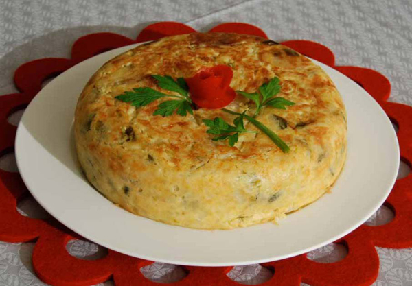

Tortilla de patatas para concebollistas
Ingredientes:

- 6 huevos
- 1/2 kg. de patatas
- media cebolla mediana
- un pimiento verde
- aceite de oliva
- sal
Preparación :
- Pelar las patatas, cortar en rodajas planas y salar
- Picar la cebolla y el pimiento en juliana
- Freir en abundante aceite las patatas con la cebolla y el pimiento a fuego medio hasta que estén blandas
- Escurrir y poner en un bol aparte con los huevos batidos y un poco más de sal
- Dejar un poco de aceite en la sarten y cuajar a fuego lento el huevo con las verduras
- Dar la vuelta y terminar de cuajar
- Servir fría o caliente, al gusto
Información nutricional:
- Proteinas
- Los huevos son los encargados de aportar la proteina en este plato
- Grasas
- El aceite de oliva es una grasa saludable, pero todos los fritos tienen mucha grasa y blablabla. No tomar durante la operación bikini
- Hidratos de carbono
- La patata es mortal para acumular hidratos. Cuidadín
- Sal
- No pasarse con la sal que es mala para la tensión alta